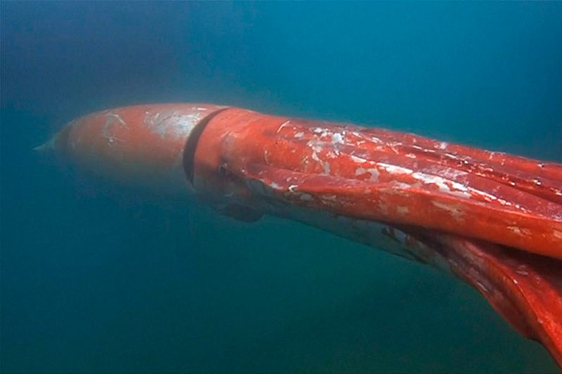
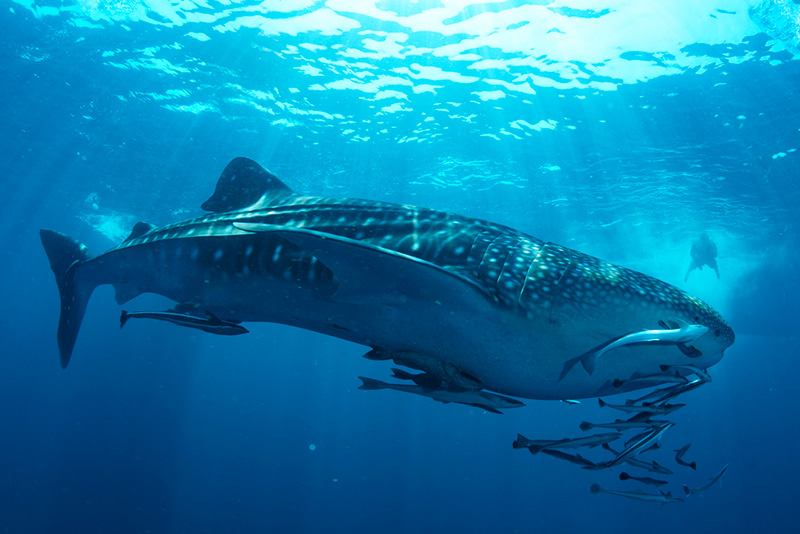

EL TOP 8 ES EL SIGUIENTE :
Calamar gigante

El calamar gigante (Architeuthis sp.) es uno de los animales marinos más
grandes del mundo, concretamente, el molusco más grande de todos, ya que
puede llegar a medir más de 30 metros de longitud y alcanzar un peso de más
de una tonelada. No fue hasta 2004 cuando se pudo conseguir imágenes de un
calamar gigante en estado vivo y, posteriormente,
en 2012 consiguieron grabarlo en su ambiente natural.
HABITAT
El calamar gigante vive en el fondo, cerca del suelo de los océanos entre los 400 y los 1.500 metros, donde la presión es elevadísima y no llega la
luz del sol. Habitan en todos los océanos del mundo. Algunos de los lugares más comunes donde se han identificado incluyen Noruega, Terranova, Nueva Zelanda
y Australia. Tienden a disfrutar de las aguas más frías por la cual rara vez se encuentran en las regiones tropicales. Es difícil contabilizar cuántos calamares
gigantes hay debido a la profundidad del agua donde viven, aunque parece que por su número no hay peligro de que se extingan a corto plazo Ha sido visto
por diferentes expediciones oceanográficas en aguas del Golfo de México y los océanos Atlántico, Pacífico e Índico.
DIETA
Este calamar tiende a alimentarse de los peces de tamaño mediano del océano, también comen calamares más pequeños si no consiguen otras fuentes.
Utilizan sus tentáculos para aferrarse a la presa exprimirla. Son capaces de utilizar sus dientes para triturar la comida y tragarla. Tienden a cazar por
su cuenta lo que significa que tienen acceso a los alimentos que deseen.
Por lo general, se mezclan con el entorno y esperan a que vengan, entonces las sorprenden con un ataque feroz, rápido y potente.
Tiburón ballena

Otra de las criaturas marinas más impresionantes que existen es el tiburón ballena (Rhincodon typus), siendo el pez existente más grande del mundo,
con aproximadamente 12 metros de longitud. Habita en los océanos y mares cercanos a los trópicos, aunque se han observado algunos ejemplares en aguas más frías,
como la costa de Nueva York. Sus hábitos reproductivos no están muy
claros, pero se cree que alcanzan la madurez sexual a los 30 años y que viven de media unos 100.
HABITAT
Los tiburones ballena pueden encontrarse en los mares abiertos cálidos de todos los océanos tropicales del mundo. Los tiburones
ballena son peces enormes de agua salada, prefieren aguas tibias y habitan en todos los océanos tropicales del mundo.
DIETA
se alimenta de pequeñas formas de vida, sobre todo de krill, fitoplancton y algas, aunque también puede consumir pequeños crustáceos, como calamares y larvas de cangrejo, y pequeños peces, como por ejemplo sardinas, caballa, atún y anchovetas.
El tiburón ballena consumirá cada día una cantidad de alimento igual al 2% de su masa corporal. No obstante, también puede pasar algunos períodos sin comer, ya que posee un sistema de reserva de energía.